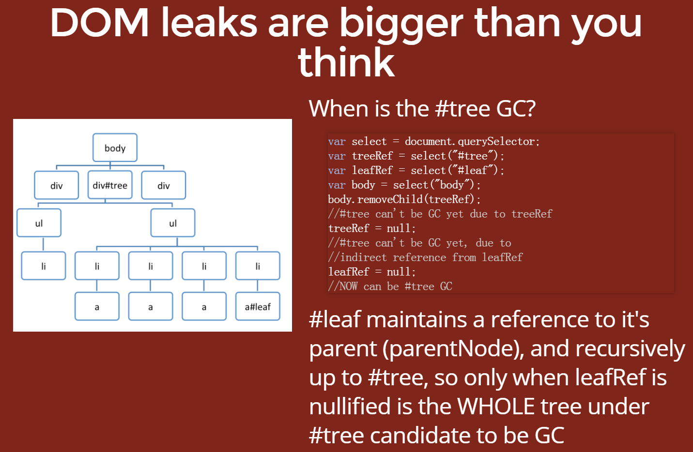

这是对象自身占用内存的大小。
典型的 JavaScript 对象会将一些内存用于自身的说明和保存中间值。通常，只有数组和字符串会有明显的浅层大小。不过，字符串和外部数组的主存储一般位于渲染器内存中，仅将一个小包装器对象置于 JavaScript 堆上。
渲染器内存是渲染检查页面的进程的内存总和：原生内存 + 页面的 JS 堆内存 + 页面启动的所有专用工作线程的 JS 堆内存。尽管如此，即使一个小对象也可能通过阻止其他对象被自动垃圾回收进程处理的方式间接地占用大量内存。
这是将对象本身连同其无法从 GC 根到达的相关对象一起删除后释放的内存大小。
GC 根由句柄组成，这些句柄在从原生代码引用 V8 外部的 JavaScript 对象时创建（本地或全局）。所有此类句柄都可以在 GC 根 < 句柄作用域和 GC 根 < 全局句柄下的堆快照内找到。本文档对句柄的介绍没有深入到浏览器实现的细节，可能让您感到困惑。您不必担心 GC 根和句柄。
存在很多内部 GC 根，其中的大部分都不需要用户关注。从应用角度来看，存在以下种类的根：

任何无法从根到达的对象都会被 GC 回收。
